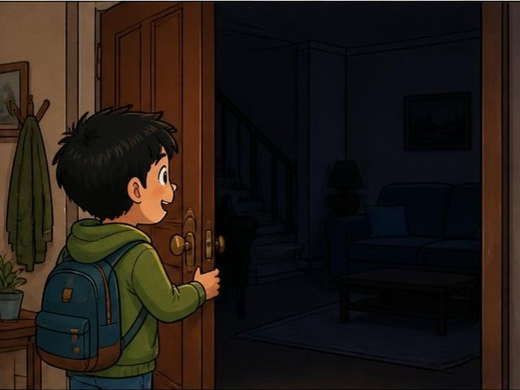
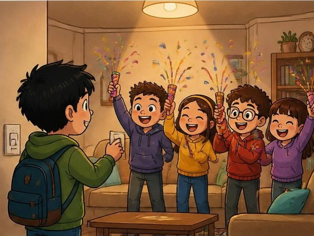
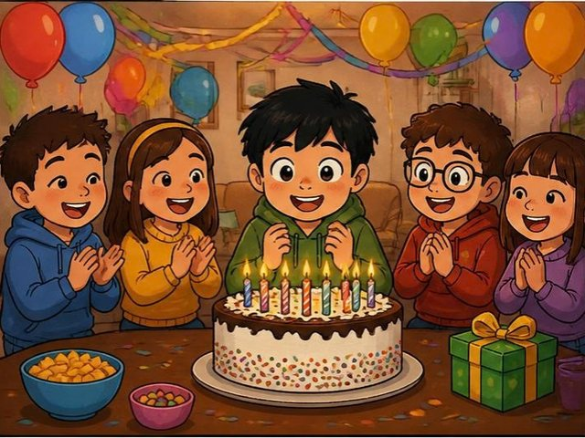

動手「寫」，不是選選擇題。單句題寫完按 看解答與評分 對照標準答案、看得分與文法解析；段落題可按 🤖 請 AI 老師批改 得到即時回饋。
第 4 回 · 完成度 0 / 15 題單句 · 段落題 1 篇
第一部分
單句寫作 Sentence Writing ‧ 50%
第 1 頁第 1–5 題：句子改寫 依提示改寫，寫出完整句子
例：The book is pink. → 提示：It ____ → 答案：It is pink.
第 2 頁第 6–10 題：句子合併 把兩句合併成一句
例：Mary has a cell phone. The cell phone is red. → 答案：Mary has a red cell phone.
第 3 頁第 11–15 題：句子重組 點字卡排出正確句子（可再點一次取消）
例：They ____. ｜ Jack / me / call → 答案：They call me Jack.
第二部分
段落寫作 Guided Writing ‧ 50%
看圖寫一篇約 50 字的短文第 4 頁
上個週末是 Tom 的生日。那天他放學回到家，發現家裡黑黑的、安安靜靜。後來發生了什麼事呢？請依下面四格圖片寫一篇約 50 字的短文。



目前 0 字 ‧ 建議約 50 字
📄 參考範文（約 53 字）
Last weekend was Tom's birthday. When he came home after school, the house was dark and quiet. Tom turned on the living room light. Suddenly, his friends jumped out and shouted "Surprise!" There were balloons and a big cake. Then everyone sang together and Tom blew out the candles happily.
✅ 得分重點（自我檢查）
有交代時間／情境開頭（Last weekend was Tom's birthday… 家裡黑黑安安靜靜）